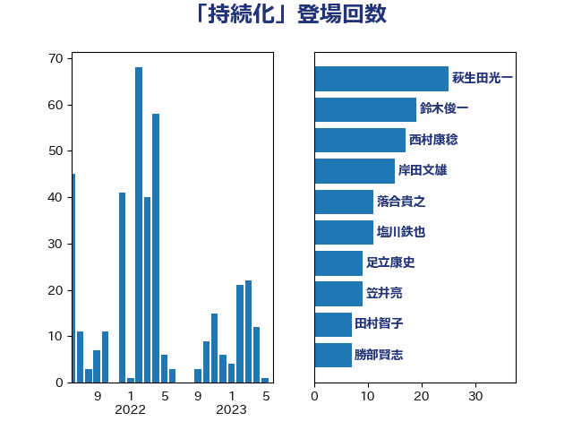

単語「持続化」

| 萩生田光一 | 自由民主党 | 25 回 |
| 鈴木俊一 | 自由民主党 | 19 回 |
| 西村康稔 | 自由民主党 | 17 回 |
| 岸田文雄 | 自由民主党 | 15 回 |
| 落合貴之 | 立憲民主党 | 11 回 |
| 塩川鉄也 | 日本共産党 | 11 回 |
| 足立康史 | 日本維新の会 | 9 回 |
| 笠井亮 | 日本共産党 | 9 回 |
| 田村智子 | 日本共産党 | 7 回 |
| 勝部賢志 | 立憲民主党 | 7 回 |
| 源馬謙太郎 | 立憲民主党 | 6 回 |
| 枝野幸男 | 立憲民主党 | 6 回 |
| 岩渕友 | 日本共産党 | 6 回 |
| 長友慎治 | 国民民主党 | 5 回 |
| 道下大樹 | 立憲民主党 | 5 回 |
| 近藤和也 | 立憲民主党 | 5 回 |
| 福山哲郎 | 立憲民主党 | 5 回 |
| 山添拓 | 日本共産党 | 5 回 |
| 田島麻衣子 | 立憲民主党 | 4 回 |
| 梶山弘志 | 自由民主党 | 4 回 |
| 杉尾秀哉 | 立憲民主党 | 4 回 |
| 志位和夫 | 日本共産党 | 4 回 |
| 福田昭夫 | 立憲民主党 | 3 回 |
| 山岡達丸 | 立憲民主党 | 3 回 |
| 吉田とも代 | 日本維新の会 | 3 回 |
| 原口一博 | 立憲民主党 | 3 回 |
| 越智俊之 | 自由民主党 | 2 回 |
| 角田秀穂 | 公明党 | 2 回 |
| 石川昭政 | 自由民主党 | 2 回 |
| 田村貴昭 | 日本共産党 | 2 回 |
| 渡辺創 | 立憲民主党 | 2 回 |
| 浜地雅一 | 公明党 | 2 回 |
| 末松義規 | 立憲民主党 | 2 回 |
| 早稲田ゆき | 立憲民主党 | 2 回 |
| 新妻秀規 | 公明党 | 2 回 |
| 徳永エリ | 立憲民主党 | 2 回 |
| 岡本三成 | 公明党 | 2 回 |
| 山崎誠 | 立憲民主党 | 2 回 |
| 山井和則 | 立憲民主党 | 2 回 |
| 小沼巧 | 立憲民主党 | 2 回 |
| 宮本徹 | 日本共産党 | 2 回 |
| 宮本岳志 | 日本共産党 | 2 回 |
| 宮本周司 | 自由民主党 | 2 回 |
| 大家敏志 | 自由民主党 | 2 回 |
| 伊藤渉 | 公明党 | 2 回 |
| 中谷真一 | 自由民主党 | 2 回 |
| 高橋はるみ | 自由民主党 | 1 回 |
| 高木陽介 | 公明党 | 1 回 |
| 高木毅 | 自由民主党 | 1 回 |
| 馬場伸幸 | 日本維新の会 | 1 回 |
| 野田聖子 | 自由民主党 | 1 回 |
| 野上浩太郎 | 自由民主党 | 1 回 |
| 赤澤亮正 | 自由民主党 | 1 回 |
| 藤巻健太 | 日本維新の会 | 1 回 |
| 藤原崇 | 自由民主党 | 1 回 |
| 羽田次郎 | 立憲民主党 | 1 回 |
| 福島伸享 | 無所属 | 1 回 |
| 石橋通宏 | 立憲民主党 | 1 回 |
| 石井章 | 日本維新の会 | 1 回 |
| 石井啓一 | 公明党 | 1 回 |
| 玉木雄一郎 | 国民民主党 | 1 回 |
| 玄葉光一郎 | 立憲民主党 | 1 回 |
| 猪瀬直樹 | 日本維新の会 | 1 回 |
| 牧原秀樹 | 自由民主党 | 1 回 |
| 片山さつき | 自由民主党 | 1 回 |
| 清水貴之 | 日本維新の会 | 1 回 |
| 浅野哲 | 国民民主党 | 1 回 |
| 浅田均 | 日本維新の会 | 1 回 |
| 泉健太 | 立憲民主党 | 1 回 |
| 池畑浩太朗 | 日本維新の会 | 1 回 |
| 江島潔 | 自由民主党 | 1 回 |
| 櫻井周 | 立憲民主党 | 1 回 |
| 柚木道義 | 立憲民主党 | 1 回 |
| 早坂敦 | 日本維新の会 | 1 回 |
| 新垣邦男 | 立憲民主党 | 1 回 |
| 斉藤鉄夫 | 公明党 | 1 回 |
| 平林晃 | 公明党 | 1 回 |
| 平木大作 | 公明党 | 1 回 |
| 岩田和親 | 自由民主党 | 1 回 |
| 山口那津男 | 公明党 | 1 回 |
| 小池晃 | 日本共産党 | 1 回 |
| 大島敦 | 立憲民主党 | 1 回 |
| 大串博志 | 立憲民主党 | 1 回 |
| 吉田久美子 | 公明党 | 1 回 |
| 加藤竜祥 | 自由民主党 | 1 回 |
| 井上貴博 | 自由民主党 | 1 回 |
| 中野英幸 | 自由民主党 | 1 回 |
| 中川宏昌 | 公明党 | 1 回 |
| 上田清司 | 国民民主党 | 1 回 |
| 三浦信祐 | 公明党 | 1 回 |